Content
This document details what you will experience with Paradox. It will cover everything you need to know before getting started with Paradox; from the interface, to the features.
Introduction
Paradox is a first of its kind software. Paradox lets you use the more diagram-like, dataflow inspired structure to represent data processing-centric functionality. It is the next generation programming tool for everyone. Paradox is easily accessible and easy to use. It works in a diagram-like, data flow inspired structure to represent data processing-centric functionality. It uses nodes which runs codes and Paradox provides a simple framework to create them and an editor to use them.The Use cases range almost through the whole Python domain, from IoT, over machine learning, generative engineering, Raspberry Pi, web APIs, and much more. Anyone with basic Python programming language understanding can use Paradox with ease.
Background
In computing, a process is the instance of a computer program that is being executed by one or many threads. It contains the program code and its activity. Depending on the operating system (OS), a process may be made up of multiple threads of execution instructions concurrentl. In Paradox the input-process-output concept is utilized on top of dataflow programming.
In programming we have sequential flow and data flow methods that helps determine the flow of the program. In sequential flow the function are performed in steps, an action must be triggered for the program to start; it is the traditional way of doing pragramming. In dataflow programming application are represented as a set of nodes (also called blocks) with input and/or output ports in them. It introduces a new programming paradigm that internally represents application as a directed graph, similarly to a dataflow diagram. Below we have the examples of sequential flow and dataflow progamming that can be done in Paradox.


The key benefit of Dataflow programming is that, in dataflow, more than one instruction can be executed at once. Thus, if several instructions be- come fire able at the same time, they can be executed in parallel. This simple principle provides the potential for massive parallel execution at the instruction level.
DFP(Data Flow Programming) has enabled many visual programming languages that provide a more user-friendly interface so that even non-technical users can write programs. Such languages are also suited for rapid prototyping. Paradox utilizes dataflow programming in Json formating so it is easy to use and mostly errorfree.
Features of Paradox
1. Create clear and pretty flows
2. Built-In Interpreter
3. Python3 by default
4. Source Code Access
5. Stylus support
6. Work fast with parallel computing
7. Multiple Themes
8. Multiple Modes
9. Multiple Extension
1. Create clear and pretty flows
Visual Scripting is a huge part of Paradox. Paradox uses blocks and nodes that help in creating clear and pretty flow. It makes it easy to follow, easy to script for rookie programmer and experienced programmers alike.

2. Built-In Interpreter
Paradox uses the built-in REPL through which you can have access to the backend session and you can use its whole API as well as access your nodes. Any modifications like creating/renaming/deleting new scripts, will reactively be processed by the frontend automatically, so you can really do everything from the console. terminal ss
3. Python3 by default
Paradox has almost every python inbuilt functions integrated in it, which you can access instantly with right click of your mouse.
4. Source Code Access
In Paradox you can access the Source code implementation of the nodes you use inside the editor. You can view and overide the source code as you and the result of the change change can be viewed in real time.
Paradox uses diagramatic scripting but you can also view the source for the script in each of the node and blocks, these source code are editable. You can make what ever changes you wish to make with-in the blocks. If the change is made in any particular block that change doesnot effect other blocks.You can change the functionality of the block by overiding the code.

5. Stylus support
Paradox supports stylus, you can write notes into your flows by hand using a stylus pen. One effective use of this feature is that it supports clarity and adds a whole new dimension to your visual flows.
6. Work fast with parallel computing
Your work feels satisfying when your work get seem less and fast. Through simple GUI and tools to work with for developer, Programming would be more easier , simpler to code, understand and build an incredible product.
7. Multiple Themes
There are many themes available in paradox, you can change them to which ever you like. Paradox consists of multiple themes that you can work with, themes like toy, tron, ghost, blender, simple, ueli, pure dark, colorful dark, industrial, pure light and colorful light.


8. Multiple Modes
Paradox consists of two modes that you can work with, data-flow and exec-flow. Data-flow is the default mode. Anyone who want to use Paradox in any mode they like is able to do so. description data flow parallel computing exec-flow sequential computing
9. Multiple Extension
Paradox has multiple extensions for you to use, like nodes, numpy, openCV, Pandas, scikit_learn. These extension provides blocks to complete you're overal code.
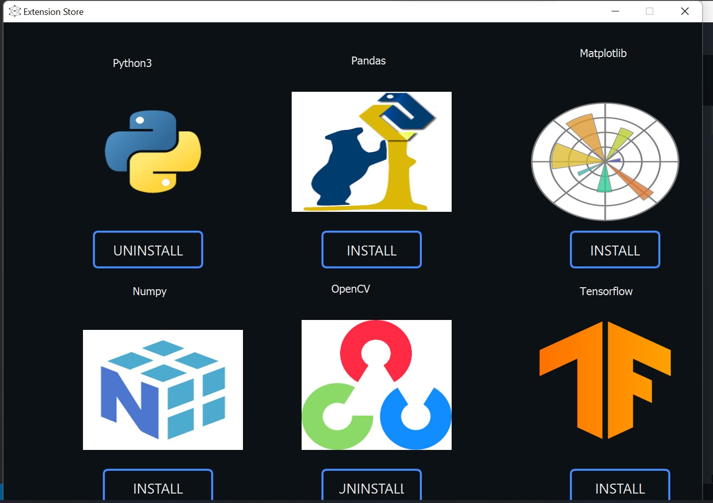Blocks
Inbuilt Block
val
This block allows you to input the value in your program.

set var
This block allows you to set variables, return values from other blocks, self-contained values.


get var
This blocks gives the value that has been assigned to the variable.

result
This block allows you to view the output that you get from you program.
Code
This block provides you space where you can code normaly and get the result in the terminal at the bottom of the screen and assign the input and output of a variable.

System Blocks
And
This block is Python's and operator which allows you to construct compound Boolean expressions that you can use to decide the course of action of your programs. It returns True if both statements are true

IF ELSE
This block allows you to work with an if else condition where the statement executes only if the test condition is True

Button
Button block is used to trigger an action.

CheckPoint
Checkpoint block is used to connect multiple branch and flows withing the program.

Clock
This block helps to set the number of iteration and the delay in result, it consists of a button which needs to be clicked in order to trigger the action.

Conjugate
Conjugate block helps the user to conjugate any matrix.

Determinant
Determinant helps to compute the detrminant of a matrix.

Do while
The do while block helps ceates do while loop where the condition is checked after executing the statement so the code is run atleat one time.

Dot Product
The Dot Product block returns a dot product of two matrixes.

For
This block helps create for loop for iterating over a sequence. For loop executes a block of code until the expression returns false
Herm
This block allows you to compute the hermatian matrix.

Imag
This block allows you to extract the imaginary part of the matrixes
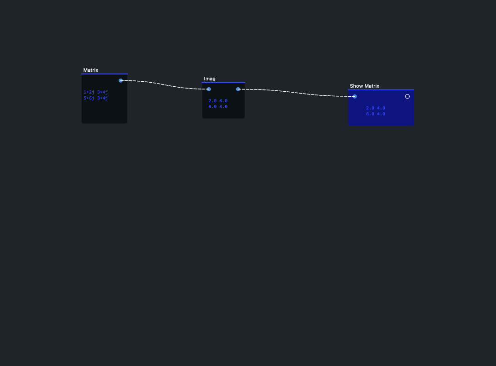Inner
This block allows you too calculate the inner product of two matrixes.

Inverse
This block helps you to find inverse of matrix

Link IN
This block broadcast the value, the code from this block needs to be pasted in the link OUT block for them to be connected and once connected you will be able to broadcast the value.

Link OUT
This block listens the value broadcasted by the link IN block. You need to copy the link from link in and paste it here for the values to be linked together and you will be able to listen to the bradcasted value.

Log
This block returns the value of the variable.

Matrix
This block allows you to create matrixes.

Mult
This block allows you to multiply matrixes.
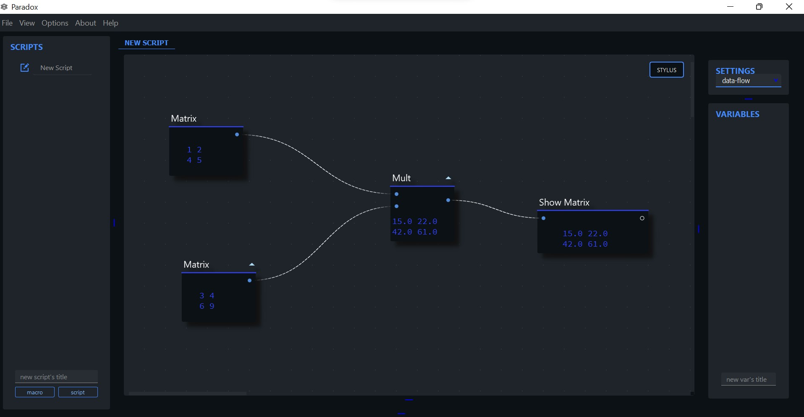NAND
The 'NAND' gate is a combination of 'AND' gate followed by 'NOT' gate. helps to create boolean expression

NOR
The NOR gate (negated OR) gives an output of 1 if both inputs are 0,it gives 0 otherwise.

NOT
The 'not' is a Logical operator in Python that will return True if the expression is False.

OR
This block helps create boolean expression that returns True if one of the statements is true

Outer
This block allows you to calculate the inner product of two matrixes

Power
This block allows you to assign power to matrix.
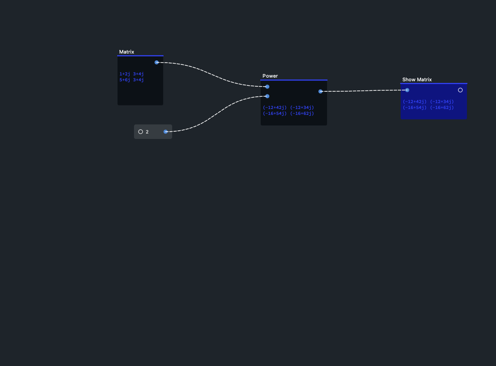This block prints the specified message to the screen, or other standard output device.

Rand
This block creates a matrix with random values from 0 to 1.
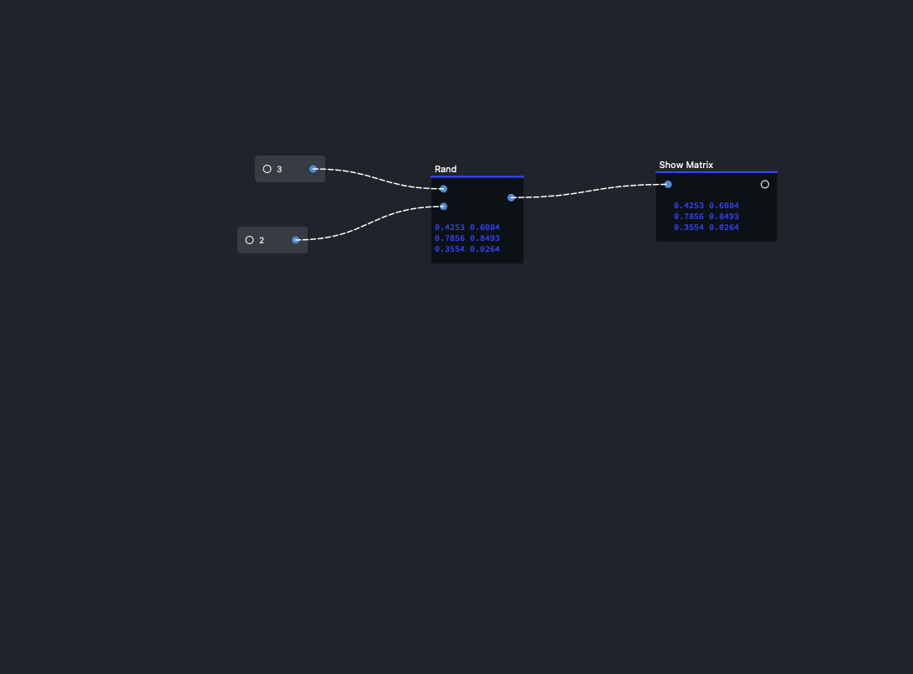Real
This block allows you to extract the real part of the matrix.
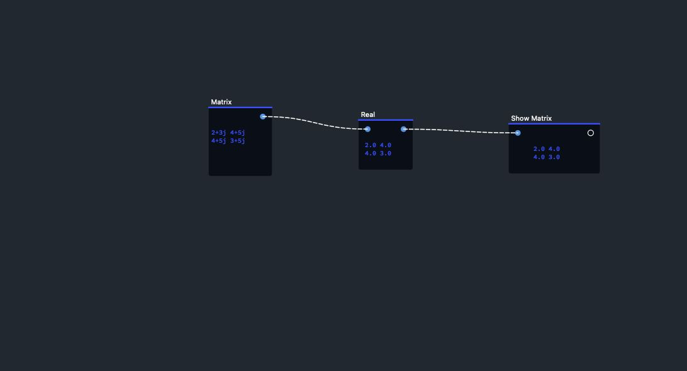Show Matrix
This block displays the matrix.
Slider
This block allows you to produce dynamic a value with the help of a sliding indicator.


Solve
This block allows you to solve the mathematical equations easily, it returns the value according to the inputs datatype.

Sqrt
This block is an inbuilt function in Python programming language that returns the square root of any number.

Store
This block allows you to sequentially store all the data provided at input in an array. A copy of the input is provided at the output.

While
This block helps set while loop where you can execute a set of statements as long as a condition is true.

XNOR
The XNOR gate (negated XOR) gives an output of 1 both inputs are same and 0 if both are different.

XOR
This block returns 1 if one of the bits is 1 and the other is 0 else returns false.

Built-in Terminal
Paradox has built-in terminal where you can code, enter commands and achieve outputs the same time. This terminal can be access by pulling the second tab at the bottom of your screen. The built-in terminal works the same as Python, here you can execute th ecode.
 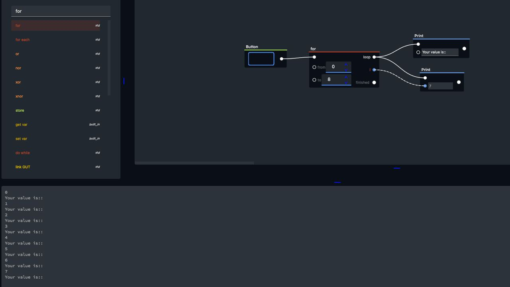
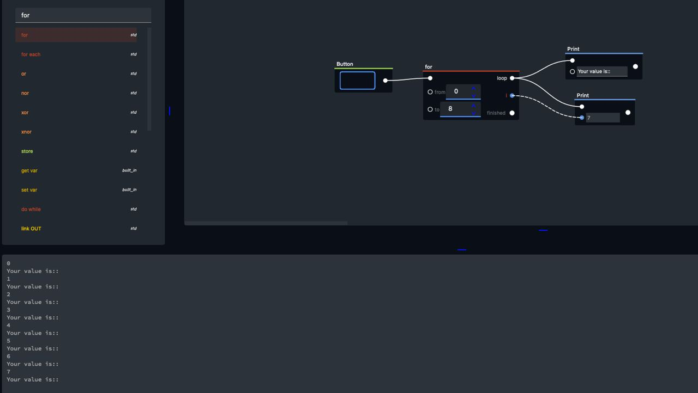
Variable
At the right side of the Paradox UI there is a variable panel where you can initialize variables and also set the values.

Log
Log is the section at the bottom of Paradox, you can get to this interface by pullig the bottom tab upward; this consists of global and error sections. Global shows the variables in the script if assigned and errors as the name suggests shows the error but with paradox errors are very unlikely to happen.
Macro
A macro is a compile-time function that transforms a part of the program to allow functionality that cannot be expressed cleanly in normal library code. Paradox includes a macro option where you can create your custom functions/blocks. Input and output are indexed according to list,You can add parameters, inputs, outputs.


Extensions
OpenCV
OpenCV (Open Source Computer Vision Library) is an open source computer vision and machine learning software library. OpenCV was built to provide a common infrastructure for computer vision applications and to accelerate the use of machine perception in the commercial products. Paradox has implemented OpenCV which can be used to edit and customize images as you desire.
Read Image
This block alows you too read image you want to display.

Display image
This block allows you to display the image, you have to connect this block with the read image block. this block take the path of the image as a parameter.
Adjust brightness
This block allows you to adjust the brightness of the image as you want.by giving parameters as alpha and beta

Blur
This block allows you to blur the image.

Resize
This block allows you to change the size of the image.

Scale
This block allows you to scale the image; you can resize the details of the image. this block take the width and height of the image as the parameter.

Save image
This block allows you to save the image that you have made all the changes to. you have to give file name and extenssion of the image.

Put text
This block allows you to put your desired text over the image.
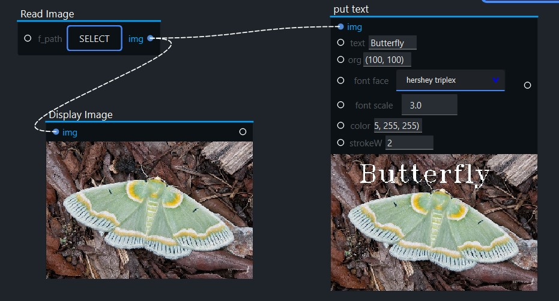Filter 2D
This block filters out the rgb value of the image. It is used to change the pixel intensity value of an image based on the surrounding pixel intensity values.

Convert Color
This block converts the colours of the picture from one color space to another. The most common color spaces that is used by image editors are RBG and CMYK.

Circle
This block highlights specific size, colour, orientation of image.

Threshold otsu
This block uses Otsu algorithm to choose the optimal threshold value. The Otsu algorithm automatically calculates the optimal threshold to separate the two peaks by maximizing the variance between the two types of pixels .

Bilatral filter
This block allows you to remoe the noise from the image and helps smooth out the image.

Threshold trunc
When pixel intensity becomes greater than threshold value it will be truncated to threshold. After this the pixel values should be set to the value which will be same as threshold value and other values will be the same.

Threshold adaptive mean
The threshold value is the mean of the neighbourhood area minus the constant C.

Threshold to zero
This block converts all pixels having values less than threshold, the pixel intensity for these is set to zero.

Threshold triangle
TThis block uses Triangle algorithm to choose the optimal threshold value. The triangle algorithm checks the shape of the histogram.

Threshold binary inv
In this case the intensity of pixels will be the inverse of THRESH_BINARY. That is 0 when pixel value is less than threshold else it will be white.
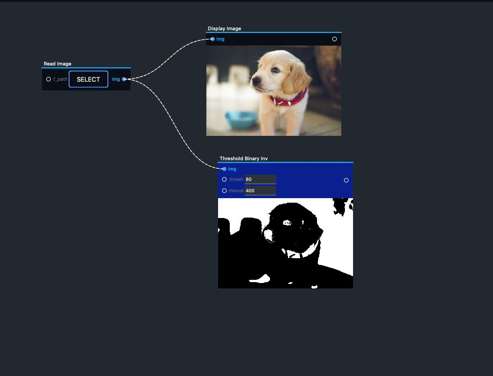Dilate
This block allows you to increase the white region in the image.
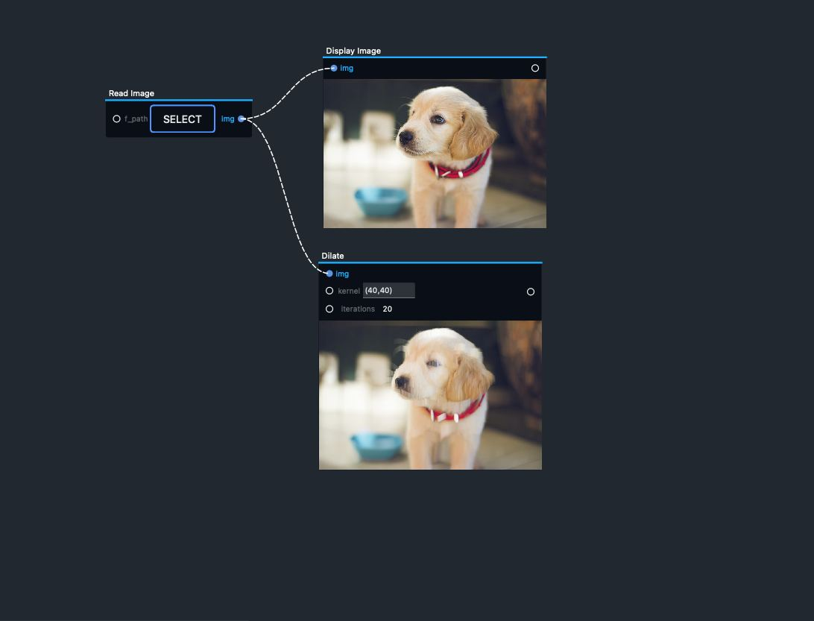Arrowed liked
This block helps you add an arrow in the image. You can input where to place the arrow, the color of the arrow and the thickness as well.

Canny
This block allows you to reduce noise in the image, find intensity gradient of the image.

Erode
>This block allows you to erode away the boundaries of foreground object, the thickness or size of the foreground object decreases.
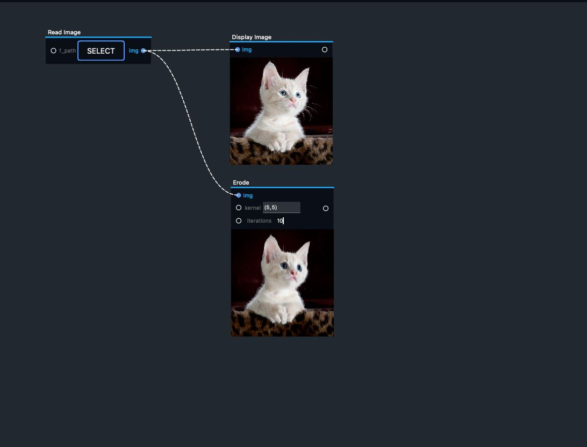Blank Image
This block allows you to create a blank image.

Crop
This block allows you to crop the image.

Line
This block allows you to place a line in the image. You can input where to place the arrow, the color of the arrow and the thickness as well.

Translate
>This block allows you to shift the image along the x and y axis. You can input the x axis and y axis value where you what to shift the image.

Blur Median
This block allows you to blur the image using the median filter. The median filter run through each element of the signal (in this case the image) and replace each pixel with the median of its neighboring pixels

Threshold Adaptive Gaussian
This block use the threshold method to alter the image to black and white, it help in finding the noide in the image.

GreyScl Circle Detection
This block allows you to detect circles in the image.

Bitwise op
This block allows you to use the bitwise operators AND, OR, NOT and XOR, and extract any part of the image.
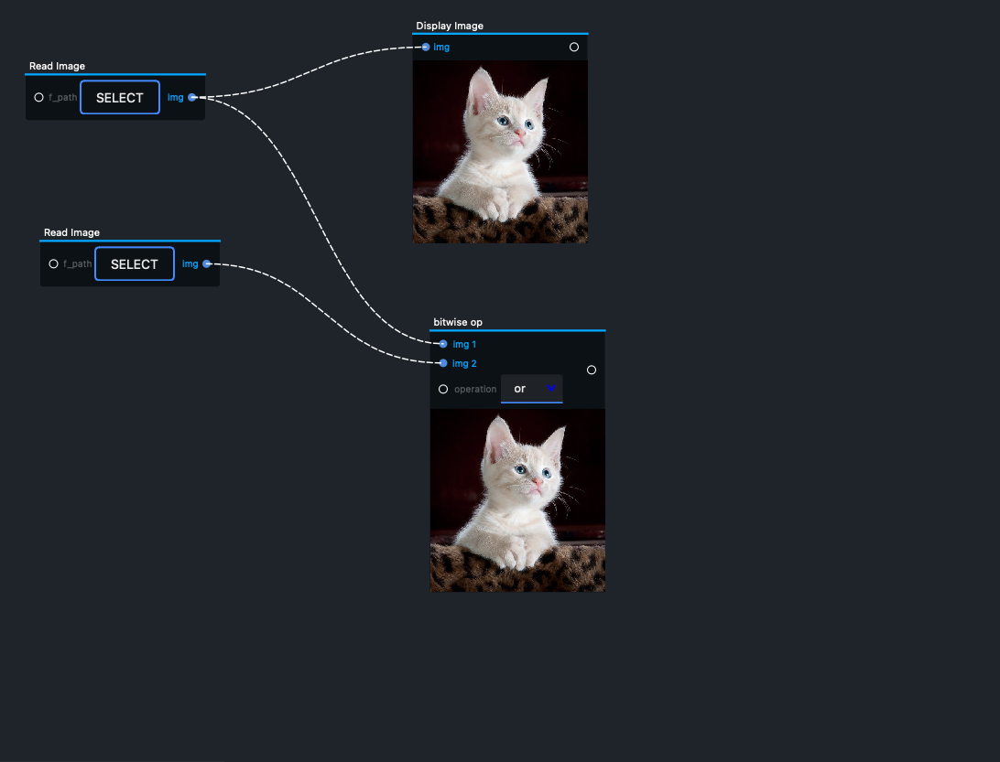Merge
This block allows you to merge the bgr values of the image that were seperated by the split color block.

Rotate
This block allows you to rotate the image. You can input thee angle that you want to rotate the image in.

Split Color
This block allows you to split the image into different channels, it takes the rgb values of the image and seperates them.

Flip
This block helps you to flip the image across its x-axis or y-axis.
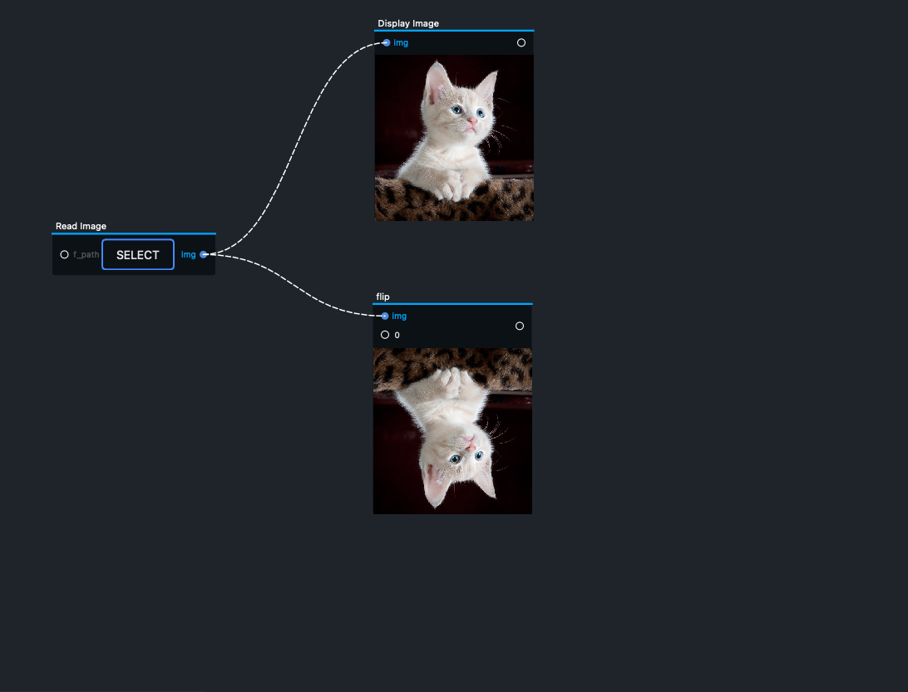Scikit learn
Scikit-learn is a free software machine learning library for the Python programming language. In general, the learning problem considers a set of n samples of data and then tries to predict properties of unknown data.
Logistic Model
Logistic regression classifies binary and multiclass values and helps in predicting the results. This block takes data in the form of csv file, chart, etc. and give predictiona as result.
Regression Model
Regression model predicts numerical value prediction linear equation. This block takes data in the form of csv file, chart, etc. and give predictiona as result.

Choose Data
This block allows you to choose data, this includes a drop down menu where you can find built in data that are available in Paradox as well as choose different that of your choice.
Read CSV
This block allows you to read the CSV files.
Predict
This block helps you predict the result from the data,trend model, input data that has been provided.
Read Folder
This block allows you to read the folder that you want to predict.